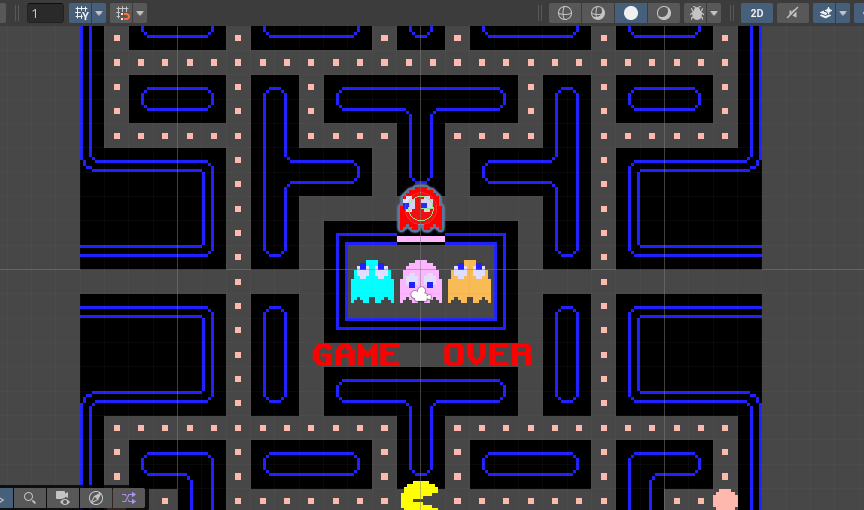
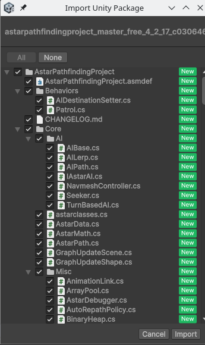
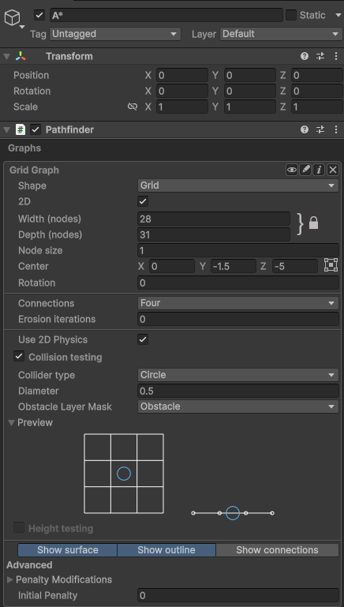
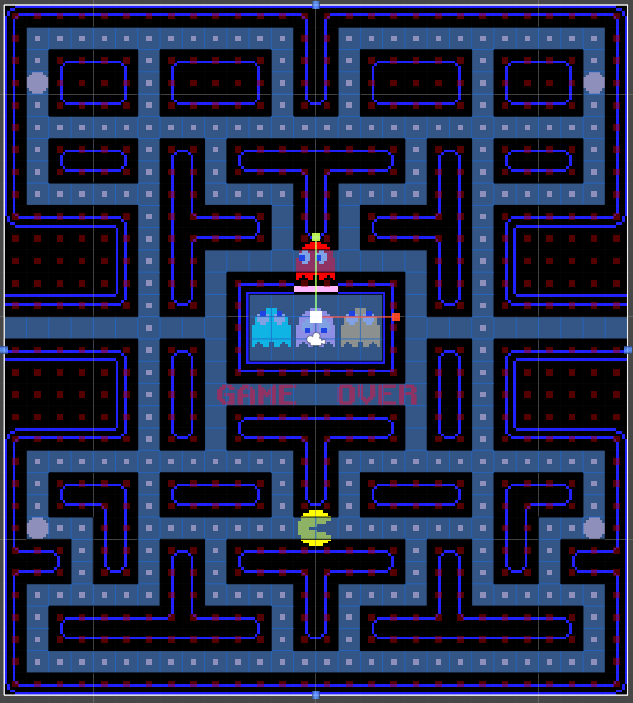
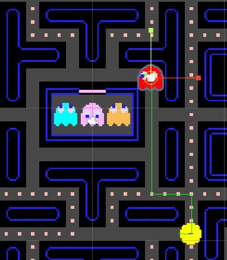
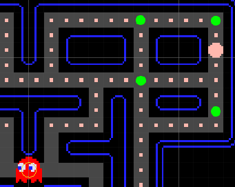

2.2 Pathfinding 2D
En aquesta secció, explorarem els conceptes bàsics del pathfinding en un entorn 2D, treballant amb un videojoc clàssic.
Configuració del projecte
Descarregueu el projecte base des del següent enllaç: Enllaç al projecte base.
Un cop descarregat, obriu-lo amb Unity. Veureu que és el clàssic Pacman.

Ara, descarregueu el paquet del A* Pathfinding Project des del següent enllaç:
Descarregueu la versió gratuïta.
Importeu el paquet descarregat al vostre projecte de Unity, fent doble click o arrossegant-lo a la finestra de Unity dins de la carpeta "Packages". Deixeu totes les opcions per defecte seleccionades i feu click a "Import".

Afegir component de pathfinding
Per afegir el component de pathfinding al vostre escenari, primer creem un GameObject buit. Nomeneu-lo "A*".
Seleccioneu el GameObject "A*" i feu click a "Add Component". Cerqueu "Pathfinder" i afegiu-lo.
Dins del component Pathfinder, feu click a Graphs -> Add New Graph -> Grid Graph.
Dins de les propietats del Grid Graph, ajusteu els següents paràmetres:
- Grid Graph 2D: activat
Ara apareixerà una graella sobre el vostre escenari. Ajusteu la mida i la posició de la graella perquè cobreixi tota l'àrea on voleu que els personatges es puguen moure, usant l'eina scale.
Configureu també les següents opcions:
- Connections: Four. Això farà que cada quadrat de la graella estigui connectat només amb els seus 4 veïns (dalt, baix, esquerra, dreta).
- Use 2D Physics: activat. Això farà que el pathfinding utilitzi la física 2D per detectar obstacles.
- Collider type: Sphere.
- Diameter: 0.5. Això defineix la mida de l'esfera que s'utilitzarà per detectar col·lisions amb obstacles.
- Obstacle layer mask: Obstacle. Això farà que el pathfinding considere com a obstacles tots els objectes que estiguin en la capa "Obstacle".
- Height testing: desactivat. Això desactiva la comprovació d'altura, ja que estem treballant en 2D.

Un cop fet això, feu click a "Scan" per generar el graf de navegació. Us haurà generat una graella blava sobre l'escenari amb els possibles camins.

Afegir components de pathfinding als fantasmes
Selecioneu el fantasma roig (Ghost_blinky) i feu click a "Add Component". Cerqueu "AIPath (2D,3D)" i afegiu-lo. Veureu que us ha afegit dos components nous: AIPath i Seeker.
En el component AIPath, configureu els següents paràmetres:
- Orientation: Y-axis forward (for 2D games).
- Max Speed: 7.
- Enable rotation: desactivat.
Ara afegiu un component més: feu click a "Add Component", cerqueu "AI Destination Setter" i afegiu-lo. Afegiu el gameobject Pacman al camp Target del component.
Si poseu en marxa el joc, veureu que el fantasma comença a perseguir el Pacman utilitzant el pathfinding.
N'hi ha 3 paràmetres més que podem ajustar:
- Slowdown distance: distància a la qual el fantasma comença a frenar quan s'acosta a la seva destinació: 0.
- Pick next waypoint distance: distància a la qual el fantasma considera que ha arribat a un punt de pas i comença a moure's cap al següent: 2.
- End reached distance: distància a la qual el fantasma considera que ha arribat a la seva destinació final: 2.5.

Si poseu en marxa el joc, veureu que el fantasma persegueix el Pacman utilitzant el pathfinding. Fixeu-vos en el gizmo que marca el camí que està seguint el fantasma.

Programació de la IA per codi
En aquest apartat, programarem la IA del fantasma per codi.
Obre l'script GhostMovement.cs.
Abans de començar a treballar amb una nova biblioteca, és una bona idea consultar la seua documentació oficial. Pots consultar la documentació de l'A* Pathfinding Project ací: Documentació A* Pathfinding Project.
Les classes més importants són:
- Seeker: s'encarrega de calcular els camins.
- Path: representa un camí calculat. Podem accedir als punts del camí a través de la propietat
vectorPath. - IAstarAI: interfície que defineix les funcionalitats bàsiques d'una entitat que utilitza el pathfinding.
- AIDestinationSetter: component que estableix la destinació d'una entitat.
El primer serà importar el namespace Pathfinding:
1 | |
Després crearem 2 propietats públiques per al Pacman i per a un punt de cera (target) que serà el pròxim punt del camí:
1 2 | |
target serà el primer objectiu del fantasma; quan arribe a ell, el següent objectiu serà el Pacman.
També necessitem referències als components IAstarAI i AIDestinationSetter:
1 2 | |
ai ens proporciona les funcionalitats bàsiques per a moure el fantasma, mentre que destinationSetter ens permetrà establir la destinació del fantasma.
El següent pas serà inicialitzar aquestes referències dins del mètode Start():
1 2 3 4 5 6 7 8 9 10 | |
Finalment, dins del mètode Update(), comprovararem si el fantasma ha arribat al seu objectiu actual. Si és així, actualitzarem l'objectiu a Pacman:
1 2 3 4 5 6 7 | |
Ara hem de crear un GameObject buit dins de l'escena i anomenar-lo target01. Col·loca'l en el cantó superior dreta de l'escena, en un lloc accessible per al fantasma. Després, assigna aquest GameObject a la propietat Target del script GhostMovement del fantasma roig. Assigna també el Pacman a la propietat Pacman.
Posa en marxa el joc i comprova que el fantasma es mou cap al punt de cerca primer i després comença a perseguir el Pacman.
Afegint punts de cerca
Ara afegirem més punts de cerca perquè el fantasma no vage directament al Pacman després d'arribar al primer punt. La forma més eficient de fer-ho és crear un array de punts de cerca i anar actualitzant l'objectiu a mesura que el fantasma arribe a cada punt.
Actualitza les propietats públiques per a que siguen un array de punts de cerca. També necessitem una propietat privada per a portar el compte de l'índex del punt de cerca actual:
1 2 3 | |
En l'inspector, crea un Empty Object anomenat BlinkyTargets i mou dins el target_01. Duplica el target per a crear 3 punts de cerca més (target_02, target_03 i target_04). Col·loca'ls en diferents llocs de l'escena tal com s'indica en la imatge:

Tip
Pots afegir als targets un component sprite renderer per a veure'ls millor en l'escena. Recorda desactivar aquest component abans de posar en marxa el joc.
Assigna els 4 targets a l'array Targets del script GhostMovement del fantasma roig.
Com estem treballant amb un array de punts de cerca, necessitem canviar la inicialització del primer objectiu dins del mètode Start():
1 2 3 4 5 6 7 8 9 10 | |
Per a actualitzar l'objectiu quan el fantasma arribe a un punt de cerca, actualitza el mètode Update() de la següent manera:
1 2 3 4 5 6 7 8 9 10 11 12 13 | |
En aquest mètode, comprovem si el fantasma ha arribat a la seva destinació actual. Si és així, verifiquem si l'índex del punt de cerca actual és l'últim de l'array. Si ho és, ha arribat al final de l'array i establim l'objectiu a Pacman. Si no ho és, incrementem l'índex del punt de cerca i actualitzem l'objectiu al següent punt de cerca de l'array.
Posa en marxa el joc i comprova que el fantasma es mou pels punts de cerca abans de perseguir el Pacman.
Per finalitzar, hem de fer que el destí s'actualitze després de la mort del Pacman, quan es torne a iniciar el joc. Creem el mètode ResetDestination() que s'encarregarà de reiniciar l'índex del punt de cerca i establir el destí al primer punt de cerca:
1 2 3 4 5 | |
Aquest mètode es cridarà des del script Ghost.cs, dins del mètode ResetState():
1 2 3 4 5 6 7 8 9 10 11 12 13 14 15 16 17 18 19 20 21 | |
Per últim, comprova que, en l'script GameManager.cs, dins del mètode ResetState(), es crida el mètode ResetState() del Pacman abans que el dels fantasmes, per evitar errors:
1 2 3 4 5 6 7 8 9 10 | |
Ja està! Posa en marxa el joc i comprova que, després de la mort del Pacman, els fantasma roig torna a moure's pels punts de cerca abans de perseguir-lo de nou.
Tasques
- Crea la lògica per a que quan el Pacman menge una pastilla de poder, el fantasma roig fugi d'ell.
- Crea els punts de cerca i la lògica de moviment per als altres fantasmes.
- Assigna a cada fantasma un comportament diferent, segons la IA original del joc: IA del Pacman